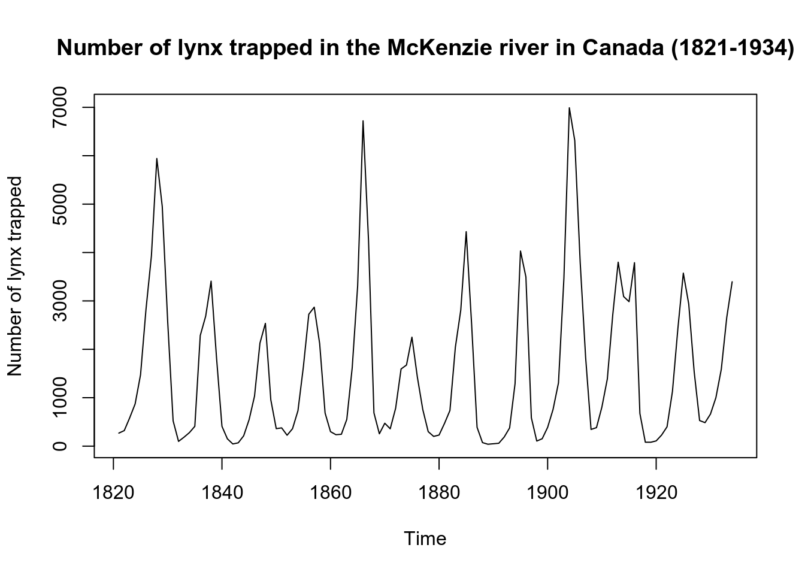
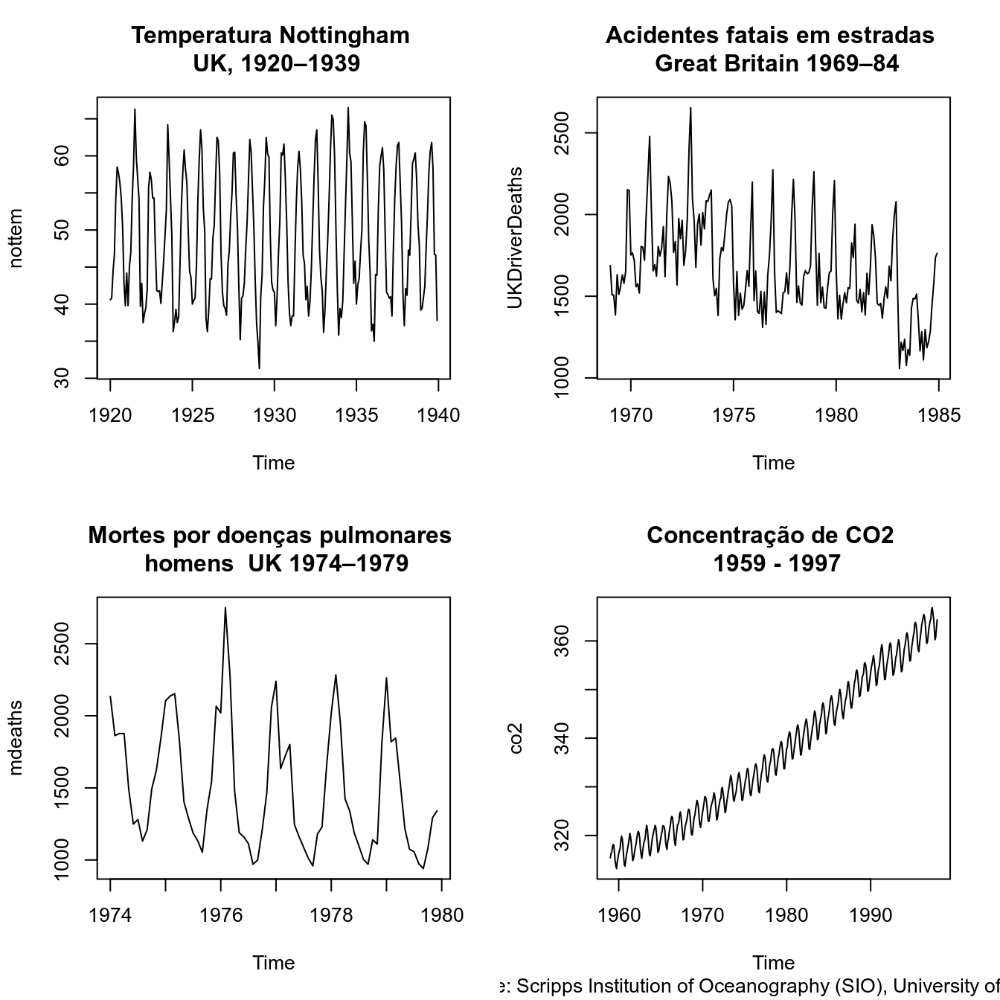
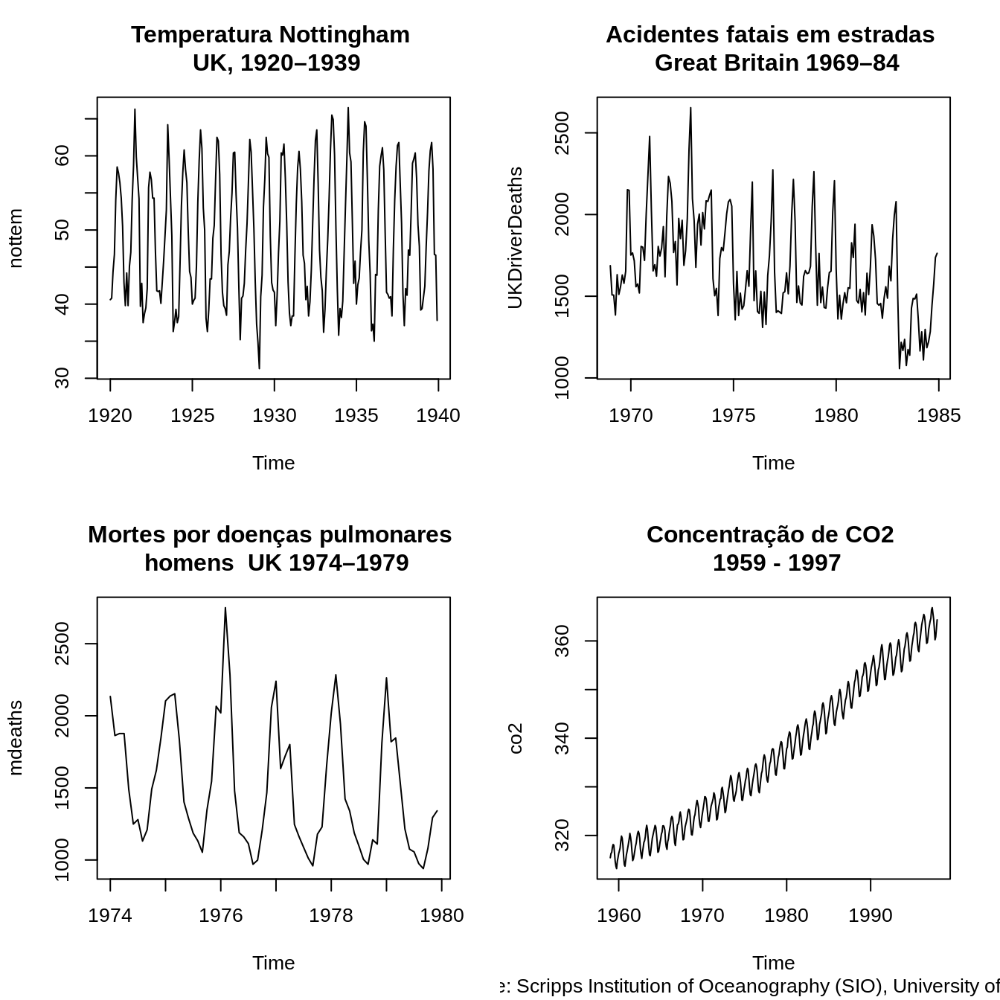

2 Introdução às Séries Temporais
2.1 Material on line sobre Séries Temporais
Time Series Task View:
https://cran.r-project.org/web/views/TimeSeries.html
Blog, Ebook and Forecast Documentation by Rob Hyndman:
https://otexts.org/fpp2/intro.html
Stackoverflow Community:
https://stackoverflow.com/questions
2.2 O que são Séries Temporais ?

Definição: É o estudo de um determinado fenômeno que ocorre ao longo do tempo. E os dados desse fenômeno precisam ser coletados em intervalos regulares de tempo de forma ordenada.
A escala do tempo de uma ST pode ser expressa como dia, semana, mês ou ano. A maneira mais comum de visualizar séries temporais é usar um gráfico de linhas simples, em que o eixo horizontal representa os incrementos de tempo e o eixo vertical representa a variável que está sendo medida.
As ST podem ser de natureza regular ou irregular. As ST regulares são aquelas que os dados são mensurados no mesmo período de tempo (ex: hora, minuto, segundo, dia, mês, trimestre, ano, etc.). Já as ST irregulares, os dados podem ser mensurados em periodos de tempo diferentes e/ou apresentar dados ausentes (missing data). Para tratar tais tipos de ST, podemos interpolar os dados mensurados em um determinado período e/ou imputar os dados de forma que a ST passe a ser considerada regular.
Condição: Esses dados seguem uma ordenação em função do tempo (dependencia temporal).
2.3 Um exemplo de Série Temporal
Ex: Total de pessoas atendidas em um hospital por dia.
Medida: “Total…”
Fato: “…de pessoas atendidas em um hospital…”
Unidade de tempo: “…por dia.”
2.4 Tipos de ST - classificação
Contínuas: A informação é obtida em qualquer intervalo de tempo (podendo ser discretizando em intervalos iguais) ou é acumulada por período. Ex: Temperatura, pluviosidade, partículas em suspensão.
Discretas: Observações obtidas em intervalos de tempo discreto e equidistantes (ano, mês, dias, semanas epidemiológicas). Ex: Mortalidade infantil, notificações por DIC.
Multivariada ou Multidimensional: São várias coleções de observações para a mesma sequência de períodos de tempo, ou seja,envolvem mais de uma série histórica. Ex: Número de homicídios e acidentes no Sudeste.
2.5 Processo Estocástico
- Um processo estocástico pode ser pensado de duas formas:
- um conjunto de possíveis trajetórias de um fenômeno físico que poderiam ser observadas;
- um conjunto de variáveis aleatórias uma para cada tempo \(t\).
Cada valor observado de uma trajetória é um dos possíveis valores que poderiam ter sido observado, de acordo com a distribuição de probabilidades da respectiva variável aleatória.
Série temporal é o conjunto de observações disponíveis para análise - uma parte de uma trajetória entre muitas que poderiam ter sido observadas.
\(y = f(tempo, \varepsilon)\), sendo \(\varepsilon\) a componente aleatória associada à função matemática do tempo.
Série com a mesma estrutura: cada série é uma possível realização do mesmo processo estocástico.

Trajetória ou série temporal ou função amostral
2.6 Notação e Nomenclatura
Matematicamente, uma série temporal discreta é representada por: \(Z_t = (Z_1 , Z_2 , Z_3 , ... , Z_n)\), sendo: \(Z\), a variável observável e \(t = 1,2,...,n\), o parâmetro do tempo.
Utilizando o exemplo óbitos por causa por local:

2.7 Objetivos : análise de ST

2.8 Objetivos : análise de ST

2.9 Componentes de uma Série Temporal
Tendência
Sazonalidade
Ciclo
Aleatório (Erro)

Fonte: Minerva’s Data Lab, Cambridge, Reino Unido
2.10 Independência
Os métodos usuais de análise estatística de dados têm como pressuposto básico a independência dos eventos (casos). Ou seja, a ocorrência de um caso de doença em uma dada pessoa é independente da ocorrência em outra pessoa.
Pressupostos básicos para uma análise de regressão:
\(E(e_i) = 0\)
Variância \(\sigma^2\) constante (homocedasticidade);
\(e_i \sim N(0, \sigma^2)\)
\(e_i \neq e_j\), são independentes
Na análise da incidência de doenças (ou qq outro indicador ecológico) ao longo do tempo isso não é verdade: a incidência em um determinado dia/mês ou ano em geral é correlacionada com a ocorrência no dia/mês/ano anterior.
Esta correlação é expressa em uma função denominada função de autocorrelação.
2.11 Dependência
Quanto a dependência uma ST pode possuir:
Independência (sem dependência serial): série puramente aleatória ou ruído branco;
Memória longa: a dependência desaparece lentamente (os valores de pontos no passado influenciam momentos muito adiante no tempo - exemplo: doenças com grande latência);
Memória curta: dependência desaparece rapidamente (doenças de alta infecciosidade e “explosivas”" - exemplo: gripe).
2.12 Função de autocorrelação
\[r_i = \dfrac{\sum_{t=1}^{N-1} (Z_t - \bar{Z})(Z_{t+j} - \bar{Z})}{\sum_{t=1}^{N} (Z_t - \bar{Z})^2}\]

Para cada intervalo de tempo fixo \(j\), pode-se calcular a correlação amostral entre os valores de \(Z_t\) e \(Z_{t+j}\). O gráfico destes valores para cada \(j\) denomina-se correlograma.
O correlograma é uma das principais ferramentas de análise exploratória em séries temporais, pois indica como cada valor em um dado instante de tempo \(t\) se relaciona com os valores em \(t+1, t+2,...,t+j\)
2.13 Tratamento dos dados
Tamanho do intervalo amostral
- A periodicidade só é detectada se for maior que o intervalo amostral
Estacionariedade:
1\(^a\) ordem - média constante ao longo de todo o período
2\(^a\) ordem - variância constante ao longo de todo o período
Como estabilizar uma série ?
Diferenças sucessivas \[\Delta Z_t = Z_t - Z_{t-1}\]
Logaritmo dos dados - Estabilizar a variância \[\Delta log Z_t = log Z_t - log Z_{t-1}\]
Transformações Box-Cox
Observações perdidas (missing) ou irregulares
- interpolação, etc.
Outliers
- exclusão ou tratamento
Registros curtos - CUIDADO!
2.14 Componentes de uma Série Temporal
Tendência
Sazonalidade
Ciclo
Aleatório
2.15 Estacionariedade
- A média e a variância se mantêm constante durante o tempo

2.15.1 Porque a Estacionariedade é Importante ?
Existem técnicas analíticas de séries temporais que dependem da estacionariedade da série para funcionarem
Se a série não é estacionária, pode-se aplicar algum tipo de transformação
Como saber ?
Visualmente
- Decomposição
Testes Estatísticos (ex: Dickey-Fuller)
2.16 Tendência
É o efeito de longo prazo na média;
Aumento ou redução a longo prazo…

2.17 Sazonalidade
Efeitos ligados à variações periódicas (semanal, mensal, anual, etc.);
Padrões que ocorrem em intervalos fixos.
Ex: Medidas de Temperatura (aumenta no verão e diminui no inverno).

2.17.1 Como detectar a sazonalidade ?
Visualmente
- Boxplots
- seasonplot
- monthplot
- decomposição
Testes Estatísticos (ex: Kruskall-Wallis)
2.18 Ciclo
Variações que apesar de periódicas não são associadas automaticamente a nenhuma medida temporal;
Aumento ou redução de frequência sem intervalos fixos.
Ex: Ciclos Econômicos e Ciclos de epidemias.

- A série pode ser descrita como sendo a soma dos componentes: tendência, sazonalidade, ciclicidade e termo aleatório.
\[Z_t = T_t + S_t + C_t + a_t\]
sendo \(t = 1,2, ..., N\)
- Se a sazonalidade varia em conjunto com a tendência (aumenta de amplitude quando aumenta a tendência), o modelo melhor é multiplicativo, que pode ser transformado em aditivo usando \(log\).
\[Z_t = T_t . S_t . \varepsilon_t\]
\[log(Z_t) = log(T_t) + log(S_t) + log(\varepsilon_t)\]
2.19 Transformações
As vezes os dados precisam ser transformados para a utilização de determinados métodos/modelos;
O objetivo é tornar os modelos mais simples, no caso das ST o objetivo seria melhorar as previsões;
As transformações devem ser feitas exclusivamente para aplicação do modelo, e não como uma; técnica de analise dos dados em si.
Alguns exemplos de transfomação dos dados em ST:
Utilização de funções: Logarítmicas, Potências, Exponenciais, ou transformação Box-Cox
Diferenciação: Series não estacionárias, objetivo é transformar a série em estacionária (ex: log)
Médias Móveis: suavização: reduz outliers e reduz efeitos sazonais
Para mostrar o resultado dessas transformações, temos:

Removendo as componentes \(T\) e \(S\), supõe-se que sobra ?
Ruído branco;
cada \(\varepsilon_t\) é “determinado” pelo \(\varepsilon_{t-1}\) - modelo AR
a variância de \(\varepsilon_t\) é “determinada” por \(\varepsilon_{t-1}\) - modelo MA
2.20 Tendência e sazonalidade
Estimar a tendência ou a sazonalidade:
ajustar polinômio, curva exponencial ou reta (paramétrico);
suavizar (filtros - não paramétricos);
diferenciar.
Diferenças:
pode-se diferenciar tantas vezes quanto necessário até estabilizar (não + que duas diferenças);
para sazonalidade usa-se diferenciação com período igual ao da sazonalidade.
\[\Delta_{s} Z_t = Z_t - Z_{t-s}\]
sendo \(s\) é o período da sazonalidade.
A série pode ser descrita como sendo a soma dos componentes: tendência, sazonalidade, ciclicidade e termo aleatório.
\[Z_t = T_t + S_t + C_t + a_t\]
sendo \(t = 1,2, ..., N\)
- Se a sazonalidade varia em conjunto com a tendência (aumenta de amplitude quando aumenta a tendência), o modelo melhor é multiplicativo, que pode ser transformado em aditivo usando \(log\).
\[Z_t = T_t . S_t . \varepsilon_t\]
\[log(Z_t) = log(T_t) + log(S_t) + log(\varepsilon_t)\]
Removendo as componentes \(T\) e \(S\), supõe-se que sobra ?
Ruído branco;
cada \(\varepsilon_t\) é “determinado” pelo \(\varepsilon_{t-1}\) - modelo AR
a variância de \(\varepsilon_t\) é “determinada” por \(\varepsilon_{t-1}\) - modelo MA
Estimar a tendência ou a sazonalidade:
ajustar polinômio, curva exponencial ou reta (paramétrico);
suavizar (filtros - não paramétricos);
diferenciar.
Diferenças:
pode-se diferenciar tantas vezes quanto necessário até estabilizar (não + que duas diferenças);
para sazonalidade usa-se diferenciação com período igual ao da sazonalidade.
\[\Delta_{s} Z_t = Z_t - Z_{t-s}\]
sendo \(s\) é o período da sazonalidade.
2.21 Alisamentos - Médias móveis
Processo de Transformação - “Suavização da Série”
Remoção de outliers
Identificação de tendências
Simples e Exponencial
Ex: Médias Móveis - ordem 5

2.21.1 Utilizando a ST mensal referente as mortes por Doenças Pulmonares no Reino Unido (1974–1979), temos:

tsclean: Função do pacote forecast que é utilizado para suavização e limpesa de outliers
2.21.2 Para Tendência
A tendência no instante \(t\) será estimada usando \(l\) observações ao redor de \(t\).
\[T_t = F(Z_t)\] \[t_t = \dfrac{1}{2k+1} \sum_{j=-k}^{k}Z_{t+j}\], ordem \(2k+1\)
o tamanho da janela é empírico
perde-se k observações nos extremos da série
o tamanho da janela é empírico
perde-se k observações nos extremos da série
quando o dado apresenta sazonalidade utiliza-se um alisamento média móvel de ordem \(s\) (o período da sazonalidade)
não pode ser usado para previsão
2.21.3 Para Sazonalidade
Suponha uma série mensal já livre de tendência e com sazonalidade igual a 12 meses
\[S_j = \frac{\bar{Y}_{.j}}{\bar{Y}}\]
Sendo:
\(S_j\), a sazonalidade,
\(\bar{Y}_{.j}\), a média de cada mês \(j\)
\(\bar{Y}\), a média das médias dos meses \(j\)
2.22 Alisamentos - Lowess


2.22.1 Locally Weighted Sum of Square (Lowess)
É uma regressão linear local ponderada
A largura da janela é indicado por uma fração dos dados que varia de 0 a 1
Exemplo: largura 0,1 significa que a janela tem largura que equivale a 10% do eixo horizontal
Quanto maior o tamanho da janela, maior o alisamento e vice-versa